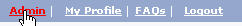
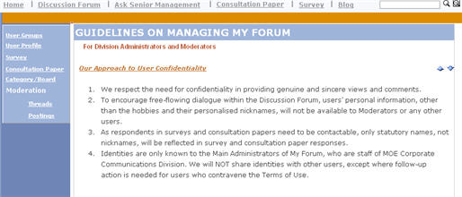

Admin Main Page
a. After logged in as an administrator, the administrator module is accessible by clicking on the Admin tab on the top part of the screen

b. Depending on the access rights assigned to the user, the available administration functions are listed on the panel on the left hand side of the screen.

|